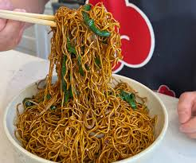

Chow Mein (Stir Fried Chicken Wok)

Description
Ingredients
- One yellow onion
- Three cloves of garlic
- 2 carrots
- 2-3 eggs
- 300 grams of Egg Noodles
- 150 grams of boneless chicken thighs
- Bright chinese soy sauce
- Dark Chinese soy sauce (A tad less)
- Chicken powder
- White pepper
Cooking
- Boil the noodles using the instructions on the package
- Wash the noodles in cold water and put them on a plate with some oil, making sure that they are seperated to some degree
- Whisk the eggs together in a bowl and add some chicken powder and white pepper
- Chop the onion and carrots, chop the garlic. Add it to a bowl (you will soon find out why all the bowls are crucial)
- Cut the chicken into bite-sized pieces
- Fire up your wok, add a good amount of oil and fry a very soft omelette with your eggs, and then pour them back to the old bowl
- Bring the wok back to a high temperature, add some oil, and add your vegetables until they get a golden brown colour.
And then pour them back to their bowl
- Do the same with the chicken, but make sure to season it and NOT to add it to the old bowl, but bring out a new one instead
- And now for the noodles. Add the soy sauce and season to your liking and whisk together with all the other ingredients.
Pro tip: To get an even amount of sauce on your dish, pour the sauce in on the side of the wok and then toss together.